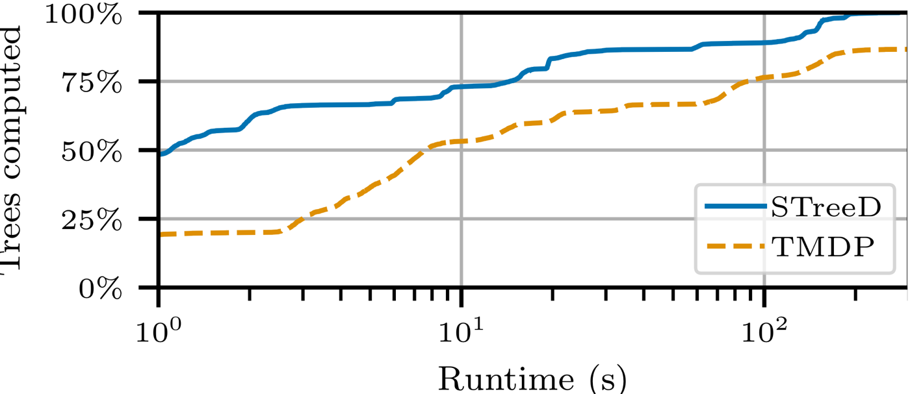
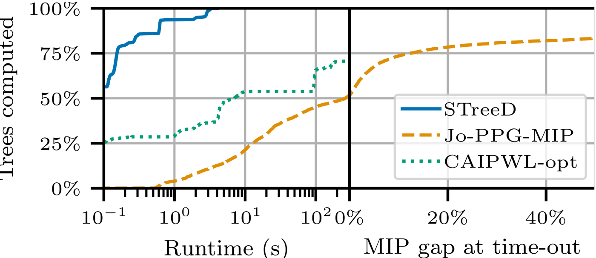
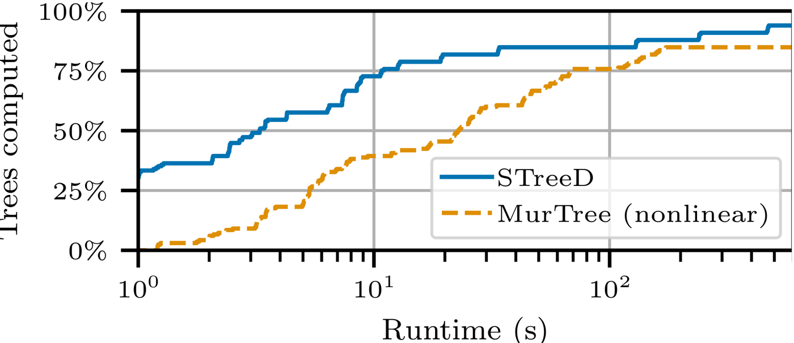
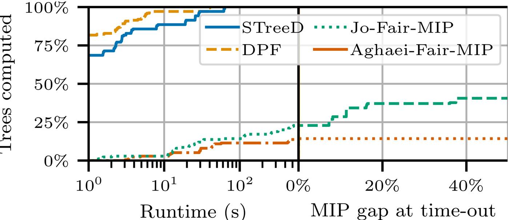

- 分離可能性の必要十分条件コストと遷移がマルコフ的で、結合の演算が順序を保ち、制約が反単調であること。加法性は要らない。
- F 値で約 7 倍速いF 値を最大にする深さ 3 と 4 の木を求める問題で、専用の動的計画法（非線形版の MurTree）より幾何平均で 7.1 倍と 6.8 倍速かった（25 データ）。
- 深さ 5 の方策木を 3 秒Warfarin の投与量の処方で、MIP（Jo ら）は深さ 3 以上で全問が 300 秒の時間切れになったが、STreeD は深さ 5 まで平均 3 秒以内に最適な木を求めた。
動的計画法は部分木を独立な部分問題として解くので、MIP や SAT より桁違いに大きな問題を解ける
小さな決定木は人が読める。深さなどの大きさを決めたうえで目的を全体として最適にする木（最適決定木）は、MIP、制約プログラミング、SAT、MaxSAT でも求められるが、数千件を超えるデータや深さ 4 以上の木では時間がかかりすぎることが多い。動的計画法（DP）は木の構造をそのまま使う。根で特徴量 \(f\) を選ぶと、データは \(f\) を満たす \(\mathcal{D}_f\) と満たさない \(\mathcal{D}_{\bar f}\) に分かれ、左右の部分木はそれぞれのデータだけで決まる。二値分類で誤分類数を最小にする場合は次の再帰になる。
深さ \(d\) の問題を、データが分かれた深さ \(d-1\) の問題 2 つに帰着させ、同じ部分問題はキャッシュして使い回す。上界と下界による枝刈りも加えた DL8.5、GOSDT、MurTree などは、汎用ソルバーより桁違いに速い。特徴量はあらかじめ二値化しておくのが前提で、STreeD もこの前提を引き継ぐ。
ただし動的計画法が使えるのは目的と制約を部分木ごとに最適化できるときだけで、既存の枠組みが課す条件は狭かった
上の再帰が正しいのは、左の部分木の最適解が右の部分木の決め方に左右されないからである。誤分類数のように木全体の値が葉の値の和になる目的なら、これが成り立つ。DL8 を一般化した Nijssen と Fromont（2010）の枠組みは、目的が加法的で、制約が反単調（ある部分木で破れたら、それを含む木でも破れる）であることを条件にした。DL8.5 は加法的な目的だけを扱って制約は扱わず、MurTree は精度だけを、GOSDT は偽陽性と偽陰性の数について線形な目的だけを扱う。
実際の応用では、この条件から外れる目的や制約が出てくる。F 値は偽陽性と偽陰性の数について非線形で、ある葉の最良のラベルが別の葉のラベルに左右される。人口統計的パリティのような公平性の制約は木全体で満たすべきもので、一見すると部分木に分けられない。問いは部分木に分けて解けるという性質（分離可能性）をどこまで広げられるかである。
最適化タスクを、コスト・遷移・比較・結合・制約・初期状態の 6 つの部品で書く
論文は決定木の最適化問題を、状態の空間 \(\mathcal{S}\) と解の値の空間 \(\mathcal{V}\) の上の 6 つ組 \(o = \langle g, t, \succ, \oplus, c, s_0 \rangle\) で表す。
- コスト関数 \(g(s, a)\)：状態 \(s\) で、ラベル \(\hat k\) を割り当てる、または特徴量 \(f\) で分岐するという行動 \(a\) のコスト。
- 遷移関数 \(t(s, f)\)：特徴量 \(f\) で左右に分岐したあとの状態。この論文の例では、状態はデータ \(\mathcal{D}\) と親ノードの分岐の集合 \(F\) の組で、\(t(\langle \mathcal{D}, F\rangle, f) = \langle \mathcal{D}_f, F \cup \{f\}\rangle\) である。
- 比較の演算 \(\succ\)：どちらの解が優越するか。全順序でなく半順序でもよい。
- 結合の演算 \(\oplus\)：左右の部分木の値と分岐のコストを 1 つの値にまとめる。
- 制約 \(c(v, s)\)：解 \(v\) が状態 \(s\) で実行可能かどうか。
- 初期状態 \(s_0 = \langle \mathcal{D}, \emptyset \rangle\)。
木の値は次の再帰で決まる。誤分類数の最小化は、\(g\) を葉で誤分類した件数、\(\succ\) を \(<\)、\(\oplus\) を足し算とし、制約を置かない場合にあたる。
分離可能であるための必要十分条件は、コストと遷移がマルコフ的で、結合が順序を保ち、制約が反単調であることだ
論文はどの部分木の最適解も、その部分木の外の決定変数に左右されずに決まる（親ノードの分岐は除く）ことを分離可能と定義する。たとえば下の図の木では、葉 L3 の最適なラベルは分岐 F2 や葉 L1、L2 に左右されてはならない。
証明は木の深さについての帰納法で、深さ 0 ではコストと遷移がマルコフ的（出力が現在の状態と選んだ行動だけで決まる）であればよい。深さ 1 以上では、部分木の最適解と新しい決定だけから最適解を作れるという最適性の原理が要る。論文はこれを 2 つの条件に分けた。
- 順序の保存（論文が新しく導入した概念）：部分木の最適解 \(v_1\) が別の解 \(v_1'\) に優越する（\(v_1 \succ v_1'\)）なら、もう一方の部分木の最適解 \(v_2\) と結合しても \(v_1 \oplus v_2 \succ v_1' \oplus v_2\) が成り立つ。足し算は \(<\) について順序を保つが、加法性そのものは必要ではない。
- 反単調な制約：実行不可能な部分解を 1 つでも含む解は最適解になれない。最小の葉のサイズの制約がその例である。
主定理（定理 4.3）は、最適化タスクが分離可能であることと、\(g\) と \(t\) がマルコフ的で、\(\oplus\) が \(\succ\) について順序を保ち、\(c\) が反単調であることが同値だと述べる。この条件は DL8 と GOSDT が求めた加法性より弱く、しかも必要条件にもなっている。論文はさらに、分離可能なタスクを 2 つ組にしたもの（値を組で持ち、両方で優越するときだけ優越とみなす）も分離可能であることを示した。値がしきい値より良いことを求めるしきい値制約は、結合するほど値が悪くなる（結合の演算が「悪化的」である）なら反単調になる。容量の制約や公平性の制約はこの形で書ける。
STreeD は部分木ごとにパレート最適な解の集合を求め、左右の組合せから親の集合を作る
比較が半順序なら、最適解は 1 つとは限らない。STreeD（Separable Trees with Dynamic programming、street と読む）は、各部分問題でパレート最適な解の集合（パレートフロント）を返す。この考え方は同じグループの非線形指標の論文（Demirović と Stuckey 2021）によるもので、論文はそれを一般の最適化タスクに広げた。
\(\operatorname{merge}\) は左右の集合から 1 つずつ選んだ解を \(\oplus\) で結合したもの（分岐のコスト \(g(s, f)\) も加える）をすべて並べ、\(\operatorname{opt}\) はそのうち制約を満たし、ほかの解に優越されないものだけを残す。定理 4.4 は、分離可能なタスクならこの再帰でパレートフロントが求まることを示す。実装（C++ と Python パッケージ）には、MurTree にならった深さ 2 専用の解法、キャッシュ、上界と下界による枝刈りがあり、付録には各技法が使える条件も書かれている。木の大きさは最大の深さに加えて分岐ノードの数でも制限でき、ノード数は検証データで選ぶ。
コストを考慮した分類、処方的な方策、F 値、公平性の制約を同じ枠組みで書ける
論文は 4 つの応用で、6 つの部品の決め方を示した。前の 2 つは従来の加法性の条件でも扱えるが、後の 2 つは扱えない。
- コストを考慮した分類：誤分類のコスト \(M_{k,\hat k}\) と、特徴量を測るコスト \(m(F, f)\) の和を最小にする。測るコストはそれまでに測った特徴量 \(F\) によって変わってよい（まとめて行う検査の割引）。葉のコストは \(\sum_{(x,k) \in \mathcal{D}} M_{k, \hat k}\)、分岐のコストは \(|\mathcal{D}| \cdot m(F, f)\) である。
- 処方的な方策：過去のデータから、方策 \(\pi\) の期待結果を直接法（DM）、逆傾向スコア重み付け（IPW）、二重ロバスト法（DR）のどれかで見積もり、最大にする。教師モデルの値を前もって計算しておけば、葉のコストは「葉の全員に処置 \(k\) を割り当てたときの値」で、結合は足し算になる。容量の制約もしきい値制約として足せる。
- F 値などの非線形な指標：クラス 0 と 1 の誤分類数をそれぞれ別のタスクとし、組にして解く。求まるのは 2 つの誤分類数のパレートフロントで、その中から F 値が最大の木を選ぶ。偽陽性と偽陰性について単調な指標なら、マシューズ相関係数でも同じ方法が使える。
- 公平性の制約：人口統計的パリティ \(P(\hat y = 1 \mid a = 1) = P(\hat y = 1 \mid a = 0)\) の差を \(\delta\) 以内に抑える条件を、2 つのしきい値制約（どちらも \(1 + \delta\) 以下）に書き直し、精度の目的と組にする。パリティは木全体で求めるもので、部分木ごとに求めると反単調でなくなる。機会均等の制約も同じように書ける。
5 つの応用で、STreeD は MIP より桁違いに速く、専用の動的計画法と同等かそれ以上の速さで最適な木を求めた
実験は 2.6 GHz の Intel i7、メモリ 8 GB、1 スレッドで行い、MIP は Gurobi 9.0 で解いた。
- コストを考慮した分類：15 データ × 誤分類コスト 3 通りの 45 シナリオで、深さ 4 まで調整した STreeD と TMDP（最適性の保証がなく、多分岐で深さの制限もない）を比べた。STreeD のテストコストが有意に低かったのは 21 シナリオ、TMDP が低かったのは 1 シナリオで、残りに有意差はなかった（\(p < 5\%\)）。正規化したコストの平均は 13.3% と 14.3% で、STreeD は多くの場合 TMDP より 1 桁速かった。
- 処方的な方策：同じ教師モデルで同じ解を求める Jo-PPG-MIP（MIP）と CAIPWL-opt（再帰的な探索）と速さを比べた。Warfarin の投与量のデータ（3,367 件、二値の特徴量 29 個）では、Jo-PPG-MIP は深さ 2 で 62%、深さ 3 以上で 100% が 300 秒の時間切れになり、CAIPWL-opt は深さ 3 で平均 96 秒、深さ 4 以上で全問が時間切れになった。STreeD は深さ 4 まで 1 秒未満、深さ 5 で 3 秒だった。深い木まで解けたので、テストで正しい処置を選んだ割合は深さ 1 の 83.1% から深さ 5 の 89.7% まで上がった。
- F 値：25 データで深さ 3 と 4 の木を求め、非線形版の MurTree より幾何平均で 7.1 倍と 6.8 倍速かった。論文はその理由の一部に、上界と下界の計算を効率化したことを挙げる。
- 公平性：12 データ、差 1% 以内の人口統計的パリティで、専用の動的計画法 DPF に近い速さを保ち、2 つの MIP（Aghaei ら、Jo ら）より数桁速かった。MIP は最小のデータ以外ほぼ時間切れになった。深さ 3 では DPF のほうが速く、論文は制約を 2 つのしきい値制約で書いたことが一因だとしている。
- 精度：25 データで深さ 4 と 5 の木を求め、DL8.5 より 6.4 倍速く、MurTree より 1.25 倍遅かった（幾何平均、どちらもウィルコクソンの符号順位検定で有意）。




図3 時間内に（最適な）木を求められた問題の割合（論文 Fig. 2、arXiv v4。横軸は対数。高いほど良い）。MIP が時間切れになった問題は、右側に時間切れの時点の MIP ギャップで示す。どの手法も 1 秒以内に解けた問題は除いてある。図中の色は論文のもので、このページの色の意味とは対応しない。
汎用ソルバー並みに多様な目的を扱いつつ動的計画法の速さを保つが、特徴量の二値化と深さの上限は前提のままだ
- 扱える問題：DL8 や GOSDT では最適に解けなかった公平性の制約、非線形な指標、容量の制約つきの収益最大化を解ける。比較が半順序の目的や、複数の目的と制約の組合せも扱える。
- 扱えない問題：MIP なら書ける分離可能でない問題（たとえばマルコフ決定過程の方策を表す決定木）は、動的計画法でどう解くか分かっていない。逆に、F 値のように分離可能でも非線形な目的は MIP では扱えない、と論文は述べる。
- 前提：特徴量は前もって二値化し、得られる木は与えられた二値化のもとで最適な二分木である。論文は今後の課題として、回帰などのほかの目的、多分岐、連続の特徴量を挙げている。回帰の木はvan den Bos ら（2024）、連続の特徴量は ConTree（2025）が同じグループから続いている。
@inproceedings{vanderlinden2023streed,
title = {Necessary and Sufficient Conditions for Optimal Decision Trees using Dynamic Programming},
author = {van der Linden, Jacobus G. M. and de Weerdt, Mathijs M. and Demirovi{\'c}, Emir},
booktitle = {Advances in Neural Information Processing Systems},
volume = {36},
pages = {9173--9212},
year = {2023},
doi = {10.52202/075280-0404}
}
ページの数値と図は arXiv 2305.19706 v4 による。謝辞によれば、v4 では付録の証明と疑似コードの誤りが直されている。書誌情報は NeurIPS の論文ページと Crossref で確認した。